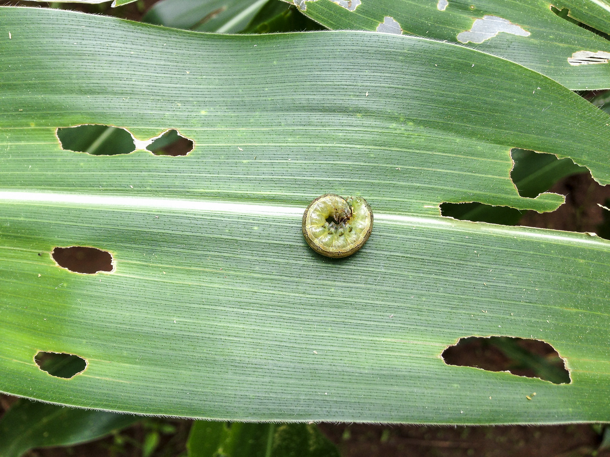
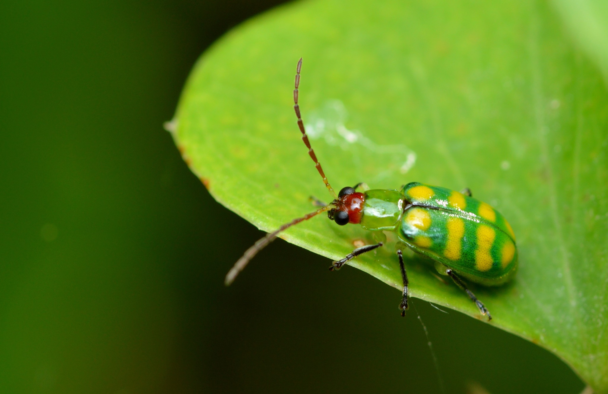

¿Conoces las plagas que afectan al cultivo de maíz?
Acá te contamos las plagas más comunes dentro de la Provincia de Ubaté
TROZADOR
( Agrotis ipsilon )

Esta plaga, conocida entre los agricultores como “trozadores” o “gusanos cortadores”, ataca principalmente al maíz, aunque también afecta algodón, papa, fríjol, hortalizas, tabaco y otros cultivos. Provoca daños al cortar las plántulas al nivel del suelo, lo que obliga a resembrar y causa pérdidas significativas en la población de plantas por hectárea.
Corte de tallos: Es el daño más característico. Las larvas cortan las plántulas jóvenes a la altura del cuello (la base del tallo cerca del suelo), causando la muerte de las plantas.
Consumo de hojas: Las larvas jóvenes raspan la epidermis de las hojas y consumen el tejido vegetal, creando agujeros irregulares en las hojas de las plantas más grandes.
Ataque a raíces y tubérculos: Las larvas también se alimentan de las raíces y pueden excavar para comerse parte de los tubérculos. .
- Evitar la siembra en los picos de población de la plaga..
- Arar el suelo de 3 a 6 semanas antes de la siembra para enterrar larvas o exponerlas a depredadores.
- Mantener el campo y sus alrededores limpios de maleza para eliminar refugios de la plaga.
- Evitar sembrar el mismo cultivo en la misma tierra año tras año.
- Construir aporques altos alrededor de las plantas.
- Enterrar los residuos de la cosecha profundamente después de la cosecha.
CUCARONCITO DE LAS HOJAS
(Diabrotica balteata Le Conte)

Esta plaga se alimenta del follaje de muchas plantas y las larvas destruyen el sistema radicular. En el maíz, el daño se manifiesta con perforaciones en las hojas y daño en raíces, lo que reduce el desarrollo, causa volcamiento y secamiento prematuro de las plantas. Los ataques más severos se han registrado en el Valle del Cauca, especialmente en siembras tardías.
El ataque de esta plaga genera importantes pérdidas económicas al deteriorar la apariencia del tubérculo y volverlo inservible para propósitos de consumo humano, animal o como semilla para futuras siembras. El daño principal consiste en la perforación de galerías al interior de la papa, lo cual no solo destruye el tejido, sino que también facilita la entrada de microorganismos secundarios (como hongos y bacterias) que causan pudriciones y una destrucción total del tubérculo.
- Seleccionar y tratar previamente la semilla para asegurar su sanidad.
- Proteger la semilla almacenada utilizando cubiertas físicas, espolvoreando insecticidas secos y manteniendo el lugar con luz difusa.
- Fomentar la utilización y conservación de los enemigos naturales de la polilla.
- Realizar la siembra a una profundidad adecuada (aproximadamente 15 cm) y practicar aporques altos de manera preventiva.
- Mantener un riego constante en el cultivo, ya que esto ayuda a prevenir la formación de grietas en el suelo por donde la polilla accede a los tubérculos.
- Controlar y destruir las malezas presentes en el lote.
- Realizar la recolección de la cosecha de manera oportuna y evitar bajo cualquier circunstancia dejar papas expuestas en el campo (papas de rechazo o "toyas").
- No abandonar los cultivos y, si es necesario por un alto nivel de daño, proceder a destruirlos y enterrar los residuos para evitar que se conviertan en focos de infestación.
- Aplicar insecticidas que cuenten con registro oficial específico para el control de la plaga.